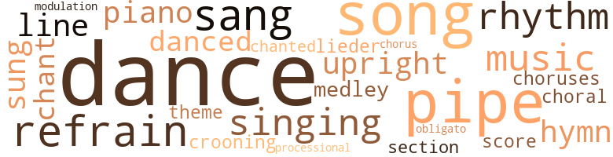
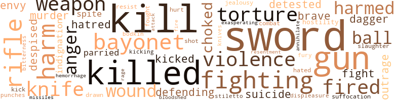
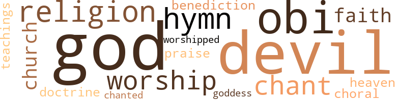

Diane, Priestess of Haiti, by Durham, John Stephens (1902)
88 music-related terms matched in this text.
Most frequent terms in this topic: dance (21); pipe (9); song (8); dances (5); refrain (4)
chant.n.01
Definition: a repetitive song in which as many syllables as necessary are assigned to a single tone
| word | sentence |
|---|---|
| chant | From behind the palm-leaf door-way came the voice of Papa Pierre singing an inarticulate chant to the time of the drums ; and the crowd , now forming into single file under an experienced leader , took up a refrain when the Priest paused . |
| chant | Papa Pierre led the chant into a swinging chorus and suddenly dropped out from the line , taking a position under the sacred tree , leaving Diane in the lead . |
chorale.n.01
Definition: a stately Protestant (especially Lutheran) hymn tune
| word | sentence |
|---|---|
| choral | The choral which the patriotic hymns of three nations have made familiar around the world was sung with deep feeling , and the effect of the trained voices attracted an audience from the street . |
chorus.n.01
Definition: any utterance produced simultaneously by a group
| word | sentence |
|---|---|
| choruses | As the dinner progressed , however , the moods changed , until drinking-songs , and patriotic choruses were sung in seemingly exhaustless repertory . |
| chorus | Papa Pierre led the chant into a swinging chorus and suddenly dropped out from the line , taking a position under the sacred tree , leaving Diane in the lead . |
croon.v.01
Definition: sing softly
| word | sentence |
|---|---|
| crooning | She was rocking his head gently and stroking his face and humming a curious , crooning song . |
dance.n.01
Definition: an artistic form of nonverbal communication
| word | sentence |
|---|---|
| dances | And I do n't want to do the cures and the bells and the dances - not so much . " |
| dance | In order to keep up their spirits , he was giving a dance , and women had come in from the neighborhood . |
| dance | " I decided to start for the dance and to get through the city before daylight , " exclaimed one of the men impatiently . |
| dance | He would take the servants into his confidence , secrete Diane in the house , and have her come out and dance in the height of the fun . |
| dance | He is having a great dance in the woods , and it was that which detained me from meeting you in our room here last night as arranged . |
| dance | He has announced the next great dance to take place near Jacmel . |
| dance | He promises me that , as the President has been so fascinated by Diane , she will have no trouble in persuading the Chief of State to follow her to that dance . " |
| dance | " Then after Papa Pierre had kept me waiting while he went through his antics as priest , curing the faithful in the name of the Voudou serpent and starting the dance , we had the meeting with Maillard and started him off to raise the insurrection . " |
| dances | Then I must die , for I am already tired of the dances and the cures . |
| dances | They must have come from the dances in the woods . |
| dance | If he had come to the dance and the cures , as he had promised Diane to do , revision would now be a fact and Tinceau President of Haïti . |
| dance | This morning on his arrival , after the early breakfast , she was absorbed in her work upon a filmy silk which she had decided to wear in her dance at the bachelors ' banquet . |
| dance | As they now began the course , skilfully using knife , fork , and spoon , decanters of native white rum were passed around and an orchestra of Haïtien drums , hidden somewhere in the palms , started up the rhythmical invitation to the dance . |
| dance | " We are going to the dance . |
| dance | " The dance ? " exclaimed Alcide . |
| dance | " Perhaps there is a dance ? " |
| dance | Crowded outside of the enclosure were the faithful , waiting for the conclusion of the cures and the beginning of the dance . |
| dance | Tinceau and Meissner looked on a while , and when the dance began they went back into the shadow , where they were promptly joined by Pierre Louis . |
| dance | He said nothing of interest to Tinceau , however , and the Hai ' tien proposed that they join the dance . |
| dance | " I know that he had a dance somewhere . " |
| dance | And when he was well on his way the deep , distant rumble of the drums and the droning of the human voices told him that the dance was on again . |
| dance | " That is my price , " the seller would say , and go on talking to her neighbor about the dance in the woods with most provoking indifference to the prospect of a sale . |
| dances | " Papa Pierre has taught me all the bells for the cures and all the steps for the dances . |
| dances | He thinks that you will take me away from the dances and the cures . |
| dance | Yet I know that he had the cures all day and a dance last night . |
| dance | She may go to the dance , but the rest of her time is mine . |
dance.v.03
Definition: skip, leap, or move up and down or sideways
| word | sentence |
|---|---|
| danced | Meissner caught the rhythm of the drums , beaten with skilful fingers and flat of hand , and danced up to the first woman who seemed to be unaccompanied . |
| danced | Such a generous patron of the booths was not ignored by the women - even though he danced like a goat , as one confidentially observed to her lover . |
hymn.n.01
Definition: a song of praise (to God or to a saint or to a nation)
| word | sentence |
|---|---|
| hymn | Koffel went to the piano , ran off a little prelude , and the entire company took up the Emperor 's hymn : " Heil Dir im Sicgerkranz , Herrscher dcs Vaterlands , Heil , Kaiser , Dir ! " |
| hymns | The choral which the patriotic hymns of three nations have made familiar around the world was sung with deep feeling , and the effect of the trained voices attracted an audience from the street . |
lied.n.01
Definition: a German art song of the 19th century for voice and piano
| word | sentence |
|---|---|
| lieder | Instinctively they sang the songs of their youth , the Volks - lieder which have done more to make the German nation than laws or courts . |
medley.n.01
Definition: a musical composition consisting of a series of songs or other musical pieces from various sources
| word | sentence |
|---|---|
| medley | There was a characteristic medley of emotions depicted on Hauffman 's face as he smoked on and listened to the recital , - paternal concern for the boy , serious fears over the political revelation , humorous appreciation of the cholera-mixture incident and of Alcide 's dolorously dirty plight . |
music.n.01
Definition: an artistic form of auditory communication incorporating instrumental or vocal tones in a structured and continuous manner
| word | sentence |
|---|---|
| music | The drummers caught her feeling , and their music graded itself down to a softly modulated rhythm . |
| music | The music ceased with a startling suddenness and the dancers retired from the floor . |
| music | It was a curious gait with which they entered again upon the dancing-floor , making short leaps from one foot to another , their hands on their hips , their bodies bent slightly forward , the marching and the swaying in perfect time with the music of the drums . |
obbligato.n.02
Definition: a part of the score that must be performed without change or omission
| word | sentence |
|---|---|
| obligato | It was a well-set movement in double measure , a slow , deep rumble , the baby drum running a rapid tattoo of variations to an obligato from one of the performers ' marvellously trained great toe . |
piano.n.01
Definition: a keyboard instrument that is played by depressing keys that cause hammers to strike tuned strings and produce sounds
| word | sentence |
|---|---|
| piano | Koffel went to the piano , ran off a little prelude , and the entire company took up the Emperor 's hymn : " Heil Dir im Sicgerkranz , Herrscher dcs Vaterlands , Heil , Kaiser , Dir ! " |
| piano | The courses seemed to them like so many independent meals , for after each the foreigners lighted their cigarettes and sang and even left the table to group themselves around the piano . |
pipe.n.04
Definition: a tubular wind instrument
| word | sentence |
|---|---|
| pipe | After a turn or two around the bath and a hearty rub-down , he was soon again on his porch , his black coffee and his big pipe before him , the picture of European comfort and ease in an uncongenial latitude . |
| pipe | Daybreak found him fresh and vigorous after his bath , sitting on his balcony , his coffee and big pipe before him . |
| pipe | He filled the big pipe as he spoke and placed the matches close at hand . |
| pipe | Hauffman settled himself at the porch table to enjoy , as usual , his pipe and his early morning reflections . |
| pipe | He reached for his pipe , which had been set at the centre of the table . |
| pipe | " Gone to be a soldier , damn him ! " snapped Hauffman , pulling away at his big pipe . |
| pipe | Only the chirping of birds and the rippling of the mountain streams and the voices of the refugees in the grass-piece and the whiff-whiff from Hauffman 's pipe . |
| pipe | He had arranged the Minister 's cup and pipe and had left the house noiselessly and was now cautiously making his way down the Turgeau road . |
| pipe | And as he set Hauffman 's big pipe on the table and turned to take the inevitable mug of beer from the servant , who had soon learned the penalty of delay in extending this attention , Diane looked out through the open door-way , over the quiet green harbor , out to the leaping , glistening southern sea . |
processional.n.01
Definition: religious music used in a procession
| word | sentence |
|---|---|
| processional | But Papa Pierre had long ago decided - though Diane 's wilfulness for a while threatened to spoil his programme - to close this successful meeting with a very simple ceremonial , the Youdou processional and the christening of his protegee for the priesthood . |
refrain.n.01
Definition: the part of a song where a soloist is joined by a group of singers
| word | sentence |
|---|---|
| refrain | There was a rollicking effect in their singing of the several verses with the refrain : " Oh nein ! |
| refrain | She made up all for him , however , taking up the refrain after each line with voice , gesture , and facial expression . |
| refrain | From behind the palm-leaf door-way came the voice of Papa Pierre singing an inarticulate chant to the time of the drums ; and the crowd , now forming into single file under an experienced leader , took up a refrain when the Priest paused . |
| refrain | They keep up the same refrain . |
rhythm.n.04
Definition: the arrangement of spoken words alternating stressed and unstressed elements
| word | sentence |
|---|---|
| rhythm | The spectators on the balcony joined the party at the table in applauding Diane as she floated out of one of the side rooms to the rhythm of the drums . |
| rhythm | The drummers caught her feeling , and their music graded itself down to a softly modulated rhythm . |
| rhythm | Meissner caught the rhythm of the drums , beaten with skilful fingers and flat of hand , and danced up to the first woman who seemed to be unaccompanied . |
score.n.02
Definition: a written form of a musical composition; parts for different instruments appear on separate staves on large pages
| word | sentence |
|---|---|
| score | A score or more of slovenly soldiers stood at attention as he followed the officer up the winding staircase . |
section.n.01
Definition: a self-contained part of a larger composition (written or musical)
| word | sentence |
|---|---|
| section | Passing the " source " where a magnificent burst of water starts to join other streams from the mountain side , he struck off into a section which appeared at first glance to be uninhabited . |
sing.v.02
Definition: produce tones with the voice
| word | sentence |
|---|---|
| sung | The choral which the patriotic hymns of three nations have made familiar around the world was sung with deep feeling , and the effect of the trained voices attracted an audience from the street . |
| sang | The courses seemed to them like so many independent meals , for after each the foreigners lighted their cigarettes and sang and even left the table to group themselves around the piano . |
| sang | Instinctively they sang the songs of their youth , the Volks - lieder which have done more to make the German nation than laws or courts . |
| sung | As the dinner progressed , however , the moods changed , until drinking-songs , and patriotic choruses were sung in seemingly exhaustless repertory . |
| sang | The foreigner sang the thing with gusto , but not naturally . |
| sang | She sat on the foreigner 's knee as she sang and she looked into his face with the irresponsible leer of partial drunkenness . |
| singing | From behind the palm-leaf door-way came the voice of Papa Pierre singing an inarticulate chant to the time of the drums ; and the crowd , now forming into single file under an experienced leader , took up a refrain when the Priest paused . |
singing.n.01
Definition: the act of singing vocal music
| word | sentence |
|---|---|
| singing | There was a rollicking effect in their singing of the several verses with the refrain : " Oh nein ! |
| singing | The men were swaying and singing . |
song.n.01
Definition: a short musical composition with words
| word | sentence |
|---|---|
| song | She was rocking his head gently and stroking his face and humming a curious , crooning song . |
| songs | Instinctively they sang the songs of their youth , the Volks - lieder which have done more to make the German nation than laws or courts . |
| song | Meissner arose and started the song : " Was ist des Deutschen Vaterland ? " |
| song | Wine was not wanting , and presently Meissner continued his part of the entertainment by starting a patois song . |
| song | Meissner watched her curiously as he followed her lead with the song . |
| song | He was soon carried away in the swirl of sense which carried all , even the street audience on the balcony , along with the swing of the song . |
| song | The crowd looked on in awe as they rushed past him , fairly shouting their inarticulate song . |
| song | Quietly and firmly the Priest grasped the fowl , and leading the song in a voice like a grand organ , he began beating its body against the trunk of the sacred tree . |
| song | There was only one man in that crowd who thought of the mortal agony of the sacred cock as its bones were crushed to the time of the song ; but even Meissner was too thoroughly soaked in the excitement and rum to give it more than passing thought . |
theme.n.03
Definition: (music) melodic subject of a musical composition
| word | sentence |
|---|---|
| theme | Alcide and Diane were the theme for Jacmel during the three weeks which she spent in the Koffel house . |
tone.v.01
Definition: utter monotonously and repetitively and rhythmically
| word | sentence |
|---|---|
| chanted | " I swear by the Serpent , " chanted the old man fervently . |
transition.n.04
Definition: a musical passage moving from one key to another
| word | sentence |
|---|---|
| modulation | Her gown was fitted close over her body , and the modulation of her hips and the movement of her thighs attracted furtive glances from the men as all bowed their reverence and passed on . |
tune.n.01
Definition: a succession of notes forming a distinctive sequence
| word | sentence |
|---|---|
| line | He fell on his knees before the Priest and implored him piteously to write , if it were only a line . |
| line | He sat by her side tracing out line by line the curves of her body , always marvellously beautiful to him . |
upright.n.02
Definition: a piano with a vertical sounding board
| word | sentence |
|---|---|
| upright | Koffel raised his glass to the level of his chin , and sat bolt upright and looked around the table . |
| upright | Every other man sat bolt upright , raised his glass , and looked over its edge at Koffel . |
152 violence-related terms matched in this text.
Most frequent terms in this topic: kill (10); sword (8); killed (7); harm (6); fighting (6)
anger.n.01
Definition: a strong emotion; a feeling that is oriented toward some real or supposed grievance
| word | sentence |
|---|---|
| anger | You shall sec Maillard suffer under my anger . |
| anger | The old man 's voice became shrill with anger . |
| anger | You ought to be glad that I saved you from what would have been the result of your anger . " |
attack.v.02
Definition: attack in speech or writing
| word | sentence |
|---|---|
| attack | To attack that law I suspect it has been necessary to use large amounts of money . |
battle.v.01
Definition: battle or contend against in or as if in a battle
| word | sentence |
|---|---|
| combat | German trade had followed his long and arduous travels in Africa ; and because of his success in learning the wants of the peoples who do not clothe themselves , the Emperor 's advisers had advanced him in rank and sent him to Port au Prince to combat the sale of American goods in the Haïtien markets . |
bayonet.n.01
Definition: a knife that can be fixed to the end of a rifle and used as a weapon
| word | sentence |
|---|---|
| bayonets | Volleys of stones , vegetables , and eggs poured upon the wretched detachment , who formed around their capture with bayonets presented , retreating slowly as they dodged the missiles . |
| bayonet | Alcide 's bayonet caught it , parried it , and deftly flung the stick into the middle of the street . |
| bayonet | He was strong in the bayonet drill . |
| bayonet | The point of the same skilful bayonet stopped his mad rush , and the crowd which had gathered from all directions howled with delight at the spectacle . |
| bayonet | You ought to have run your bayonet through that brute . |
bleeding.n.01
Definition: the flow of blood from a ruptured blood vessel
| word | sentence |
|---|---|
| hemorrhage | Meissner was busily at work reducing the hemorrhage from the wound while waiting the coming of the doctor . |
bloodshed.n.01
Definition: the shedding of blood resulting in murder
| word | sentence |
|---|---|
| bloodshed | " Are you sure that your arrangements are well made and that there will be no bloodshed ? |
contemn.v.01
Definition: look down on with disdain
| word | sentence |
|---|---|
| despised | How he despised himself ! |
| despised | How he despised these politicians ! |
dagger.n.01
Definition: a short knife with a pointed blade used for piercing or stabbing
| word | sentence |
|---|---|
| dagger | It was a dagger sheathed . |
| dagger | He returned from his room with the dagger which the mother of the rescued child had forced upon him . |
displeasure.n.01
Definition: the feeling of being displeased or annoyed or dissatisfied with someone or something
| word | sentence |
|---|---|
| displeasure | In backing himself out of the room the officer stumbled over a chair , and the President expressed his displeasure by a glance of the eye that was like the crack of a whip . |
draw.v.23
Definition: pull (a person) apart with four horses tied to his extremities, so as to execute him
| word | sentence |
|---|---|
| drawn | She had drawn up her knee and was leaning forward , her chin supported by the palm of her hand - her accustomed attitude when thinking seriously or deeply moved . |
eliminate.v.03
Definition: kill in large numbers
| word | sentence |
|---|---|
| annihilate | I 'll bring out a school-ship and annihilate you ! |
envy.n.01
Definition: a feeling of grudging admiration and desire to have something that is possessed by another
| word | sentence |
|---|---|
| envy | This appealed to the vanity of Meissner and excited the envy of the native girls of Jacmel . |
| envy | He stretched out on the damp floor with a thought of envy for the blessedness of that happily married man . |
fight.n.02
Definition: the act of fighting; any contest or struggle
| word | sentence |
|---|---|
| fighting | " Maillard was the stronger and he forced the fighting . |
| fighting | Why not enter and remain until after the fighting ? |
fight.n.05
Definition: a boxing or wrestling match
| word | sentence |
|---|---|
| fight | Do I not prefer a fight to a plot ? " |
fight.v.02
Definition: fight against or resist strongly
| word | sentence |
|---|---|
| fighting | Tinceau had reported Maillard to be the leader of the rebels and that he was but the fighting man for Pirot . |
| defending | It will be better to kill him in battle defending the President . |
| defending | They talked on earnestly , the President repeating charges of ingratitude against Pirot and Hauffman warmly defending the Haïtien diplomat . |
| fought | He looked on while the excited Haïtiens fought the fire in their awkward fashion , and then decided to hunt up his friends . |
| fighting | As each saw the other about the same time , they drew and fell to fighting furiously , calling each other ' trompeur ' and ' traitre ' in a way that bespoke deadly personal hatred . |
| fighting | The soldiers of both sides stopped fighting and crowded around to see the duel . |
| fight | " Haïtians do not want to fight one another if they can avoid doing so , " observed Pirot . |
| fighting | What a mockery to die fighting for them ! |
fury.n.01
Definition: a feeling of intense anger
| word | sentence |
|---|---|
| fury | In his fury the boy leaped over her falling body to resume his attack . |
| rage | The mother , for such she proved to be , shrieking with rage , pounded the officers face with an over-ripe squash . |
gag.v.06
Definition: cause to retch or choke
| word | sentence |
|---|---|
| choked | The startled cry was choked in the throat , held in the firm grasp of the Priest . |
| choked | She put the wig on me , and the hat , and filled my face with powder till she choked me - just as all the women pile it on here . |
gun.n.01
Definition: a weapon that discharges a missile at high velocity (especially from a metal tube or barrel)
| word | sentence |
|---|---|
| guns | I have seen men die under fire of many guns . |
| guns | The little stone-and-mud fortress to the south of the gate had two little vicious-looking , rapid-firing guns mounted to command the entire block . |
| guns | The little brass machine guns were no longer mere ornaments . |
| guns | Of course the President would receive the Minister ; and Hauffman , waiting to be announced , smiled at three spiteful-looking machine guns which pointed directly at him . |
| gun | He ran towards the military post to secure a gun . |
| gun | " To the post to get my gun . " |
| gun | Presently , without changing his position , without even raising his head , the old man grunted , - " I thought you would be in town with a gun in your hand by this time . " |
harm.v.01
Definition: cause or do harm to
| word | sentence |
|---|---|
| harm | If my dream directs you aright , - and it can not direct you to harm , - then , some time in the future , come to the cures as one who believes , at least as one who recognizes my power . |
| harmed | " If you have harmed him , I 'll kill you . |
| harmed | He could not understand why she should so suddenly and apparently without suggestion imagine that he had harmed the foolish boy . |
| harmed | He had not harmed the girl . |
| harm | You will wait until never ends before you will do me harm . |
hate.n.01
Definition: the emotion of intense dislike; a feeling of dislike so strong that it demands action
| word | sentence |
|---|---|
| hatred | As each saw the other about the same time , they drew and fell to fighting furiously , calling each other ' trompeur ' and ' traitre ' in a way that bespoke deadly personal hatred . |
| hatred | But now his whole heart went out to the boy , who , firmly held as he was , stood with every muscle quivering deadly hatred . |
hate.v.01
Definition: dislike intensely; feel antipathy or aversion towards
| word | sentence |
|---|---|
| hated | How she hated it all ! |
| detested | She detested Pierre Louis and she was tired of the charlatanism . |
| detested | The Minister told him that he must serve in the army , and , after a vigorous protest , the boy forced himself to be resigned to the experience which he so detested . |
hostility.n.01
Definition: a hostile (very unfriendly) disposition
| word | sentence |
|---|---|
| hostility | " Tinceau openly expressed his hostility to me this morning in the presence of the President . |
indignation.n.01
Definition: a feeling of righteous anger
| word | sentence |
|---|---|
| outrage | " It is a brutal outrage ! |
| indignation | Howls of indignation came from every side . |
| indignation | Alcide 's indignation was hard to restrain , but he held his rifle firmly and obeyed orders with a military precision that elicited words of commendation from the Lieutenant . |
| outrage | " It was an infernal outrage , " the German was saying - swearing in German , French , and patois in a way which Alcide recognized as indicating that his employer was dangerously angry . |
infuriate.v.01
Definition: make furious
| word | sentence |
|---|---|
| exasperating | " It is infernally monotonous lying here after this fashion , and it is positively exasperating to know that you , my fellow in distress , can sleep so easily . |
injury.n.01
Definition: any physical damage to the body caused by violence or accident or fracture etc.
| word | sentence |
|---|---|
| harm | " By all the oaths to the sacred Serpent , I swear that I have done no harm to that boy except to insist that he be put into the army , " said the Priest solemnly . |
| harm | " I did the boy no harm . " |
| harm | No harm shall come to you , my son ! " |
| harm | This fire will do no harm , and the three shots were fired by men who made off to the woods immediately . |
jealousy.n.01
Definition: a feeling of jealous envy (especially of a rival)
| word | sentence |
|---|---|
| jealousy | The attitude of the man , his demonstration of terror of Maillard , fired the old man 's jealousy of the younger rival . |
kick_back.v.02
Definition: spring back, as from a forceful thrust
| word | sentence |
|---|---|
| kick | He could kick out the side of the house . |
| kicked | He kicked . |
| kicked | He kicked again and fell headlong through the side into the burning trash , holding the limp body of the child at arms ' length that it might not be crushed . |
| kicking | " No you do n't , " cried Wiley , kicking off his shoes . |
kill.v.10
Definition: cause the death of, without intention
| word | sentence |
|---|---|
| kill | " If you have harmed him , I 'll kill you . |
| kill | Yes , kill you , kill you with my own hands ! |
| kill | Yes , kill you , kill you with my own hands ! |
| kill | " Then you must kill him too , " said the Priest seriously . |
| kill | Then you must kill Maillard . |
| kill | It will be better to kill him in battle defending the President . |
| kill | But you must kill Maillard or he will ruin all of us . " |
| killed | " You have killed my man ! " |
| kill | When you go back to Germany I will kill myself . |
| killed | The President had taken charge of the streets in person , and more than one hundred men were already reported dead - killed on sight . |
| killed | " No ; Maillard was killed in a duel with Tinceau . |
| killed | Tinceau 's men rushed forward to seize him , when he drew his revolver with his left hand and killed himself . " |
| killed | He had actually killed off two hours listening to the ecstasies of her charming prattle . |
| kill | None of them knew him , and he joined them to kill the time into Jacmel . |
| kill | She is beautiful , and she has a devotion so that nothing can kill her . |
| killed | He had recognized Alcide and he would have killed him in self-defence . |
| killed | Had you struck the child you would have injured him seriously - perhaps killed him . |
knife.n.02
Definition: a weapon with a handle and blade with a sharp point
| word | sentence |
|---|---|
| Knives | Knives , forks , and large spoons were passed and deep soup-plates piled at the head of the table . |
| knife | As they now began the course , skilfully using knife , fork , and spoon , decanters of native white rum were passed around and an orchestra of Haïtien drums , hidden somewhere in the palms , started up the rhythmical invitation to the dance . |
| knife | In the faint light on the balcony he saw the boy , his face , the knife . |
| knife | The Priest drew a large knife from the girdle under his gown . |
| knife | As she reached him , one sweep of the knife whipped the head from the neck of the still struggling cock and a deft swing brought the fowl aloft just over her head . |
malice.n.01
Definition: feeling a need to see others suffer
| word | sentence |
|---|---|
| spite | In spite of the pace which he had led her , she was still the same simple child of nature . |
| spite | Hauffman had come over the mountain from Port au Prince as fast as his horse could bring him , and it was he who had dissipated the shadowy doubts which had lingered with Alcide in spite of Meissner 's explanation . |
murder.n.01
Definition: unlawful premeditated killing of a human being by a human being
| word | sentence |
|---|---|
| murder | " That would be murder ! " exclaimed Hauffman . |
| murder | And you were going to let them murder you without a word to me ? |
musket_ball.n.01
Definition: a solid projectile that is shot by a musket
| word | sentence |
|---|---|
| ball | Off to the east , masses of mist , like the smoke from the artillery of great armies , made battle against the approaching sun , a magnificent red ball , irresistibly forcing his way to daily dominion . |
| ball | There was to be a ball , of course , and as they sat in the soft evening air planning the entertainments between the hands of a game of poker somebody proposed a bachelor dinner . |
| ball | " So the ball is set rolling , " said Meissner in a tone of relief . |
open_fire.v.01
Definition: start firing a weapon
| word | sentence |
|---|---|
| fired | The attitude of the man , his demonstration of terror of Maillard , fired the old man 's jealousy of the younger rival . |
| fired | On reaching the street three shots were heard fired in a rapid but distinct succession . |
| fired | This fire will do no harm , and the three shots were fired by men who made off to the woods immediately . |
| fired | Occasionally an irresponsible shot was fired , and all through the city the wind carried the shrill tones of the " Qui vive ? " but there was no exciting incident . |
| fire | " He is a volunteer , " yelled the Lieutenant above the cries of the women , " and if you do n't stop I 'll fire a volley into you . " |
pain.v.02
Definition: cause emotional anguish or make miserable
| word | sentence |
|---|---|
| hurt | He knew that he was not seriously hurt . |
parry.v.01
Definition: impede the movement of (an opponent or a ball)
| word | sentence |
|---|---|
| parried | Alcide 's bayonet caught it , parried it , and deftly flung the stick into the middle of the street . |
| parried | And you parried , did you ? |
poniard.n.01
Definition: a dagger with a slender blade
| word | sentence |
|---|---|
| bodkin | It was a long , slender bodkin of the poignard type , a firm yet flexible body glancing off to almost a needle-point , a thing of grace with all its suggestions of possible kinetic deadliness . |
projectile.n.01
Definition: a weapon that is forcibly thrown or projected at a targets but is not self-propelled
| word | sentence |
|---|---|
| missiles | Volleys of stones , vegetables , and eggs poured upon the wretched detachment , who formed around their capture with bayonets presented , retreating slowly as they dodged the missiles . |
punch.n.01
Definition: (boxing) a blow with the fist
| word | sentence |
|---|---|
| punches | It was she who did the entertaining , and it was she who made the punches . |
resentment.n.01
Definition: a feeling of deep and bitter anger and ill-will
| word | sentence |
|---|---|
| bitterness | No bitterness of material warfare , however , could approach the moral struggle through which he was passing . |
| resentment | It was the same bitter mood which had held him all the morning , but the old Priest was now the object of his resentment . |
resist.v.04
Definition: withstand the force of something
| word | sentence |
|---|---|
| resist | It was a pretty sight , he remarked to himself on approaching , as he watched the dried leaves so skilfully interwoven to resist rain and sun , twist and crackle into flame , freeing themselves into fluffy flakes of fire to be carried off into the air along the mountain side . |
rifle.n.01
Definition: a shoulder firearm with a long barrel and a rifled bore
| word | sentence |
|---|---|
| rifles | " The end was most dramatic , " he said ; " nothing but a shot from one of the government rifles saved Tinceau 's life . |
| rifle | Each man carried a rifle . |
| rifle | Alcide 's indignation was hard to restrain , but he held his rifle firmly and obeyed orders with a military precision that elicited words of commendation from the Lieutenant . |
| rifle | " Surrender your rifle . |
| rifle | Alcide handed over his rifle , saluted , and entered the group of volunteers . |
| rifle | He sat up sidewise on his hammock and reached for his rifle . |
shoot.v.02
Definition: kill by firing a missile
| word | sentence |
|---|---|
| shot | Several of these had been shot also . |
slaughter.n.03
Definition: the savage and excessive killing of many people
| word | sentence |
|---|---|
| slaughter | They had crossed the frontier into Santo Domingo to seek cattle for slaughter , but the people had heard of their coming and had moved everything eatable . |
stiletto.n.01
Definition: a small dagger with a tapered blade
| word | sentence |
|---|---|
| stiletto | He grasped the ancient stiletto and rose from his chair . |
suffocation.n.01
Definition: killing by depriving of oxygen
| word | sentence |
|---|---|
| suffocation | Was this the death of suffocation ? |
suicide.n.01
Definition: the act of killing yourself
| word | sentence |
|---|---|
| suicide | What idiocy to talk about suicide ! |
| suicide | He formally announced the suppression of the insurrection and the suicide of its leader . |
sword.n.01
Definition: a cutting or thrusting weapon that has a long metal blade and a hilt with a hand guard
| word | sentence |
|---|---|
| sword | I replied that I could give him some lessons in the use of the sword he wears , and that , with the thought that I am the best swordsman in Port an Prince , probably calmed him . |
| sword | He ungirted his sword and handed it to the War Minister . |
| sword | Neither handled his sword very well , but both were giants in strength . |
| sword | A young lieutenant sprang forward and drove his sword into the breast of th ' e criminal . |
| swords | Koffel was at work balancing two swords to complete the decoration . |
| swords | Meissner had been walking around expressing his pleasure over everything , but the two swords balanced under the portrait of the Emperor particularly caught his fancy . |
| swords | Meissner watched him as he worked the wire with skilful fingers , balancing the two swords , one of ancient French pattern and the other Koffel 's own , which had seen active service . |
| swords | " We raked up everything at hand for decoration , and I stumbled over these two swords . " |
| sword | " Yes , I bought that old sword from an old coffee-buyer here in the mountains . |
| sword | The officer wore his sword at his side and he carried in his hand a cane of cocomacaque , a walking-stick affected by foreigners and by Haïtiens of position . |
| sword | The officer walked last , his sword in one hand and his cocomacaque with its silver head in the other , swearing vigorously at the women in all the rich and original profanity of the patois . |
| sword | " How dare you , you -------- ! " cried the officer , dashing at him with drawn sword . |
torment.v.01
Definition: torment emotionally or mentally
| word | sentence |
|---|---|
| torture | He poured a fiery cholera mixture down Alcide 's throat , and the patient no longer had reason to simulate his torture . |
| torture | The German gave way with poor grace , and immediately began to torture the switchman at the central telephone station . |
| torture | Because of his irreverence to me , he shall writhe in torture before I let him die . " |
| torture | He will be a mere brute in pain and torture before I let him die . " |
violence.n.01
Definition: an act of aggression (as one against a person who resists)
| word | sentence |
|---|---|
| violence | I kept myself fairly well in hand , however , and came out of the difficulty without violence . " |
| violence | It is violence to every human right ! " |
| violence | If it were not for the violence , if we had law here , I would have had a chance to do my duty . |
| violence | Living , you shall suffer the tortures of h * ll , and your death shall be by violence . |
weapon.n.01
Definition: any instrument or instrumentality used in fighting or hunting
| word | sentence |
|---|---|
| weapons | Boxes of cartridges in all their disfiguring but business-like rudeness were stowed behind the weapons , broken and ready for use . |
| weapons | Soldiers were lying around , some sleeping and others gambling ; but weapons of all kinds were in evidence , and there was no mistaking the nature of the preparations . |
| weapons | The wires were practically invisible , and the weapons seemed to be balanced in air . |
| weapon | The men were all fascinated by the vicious little weapon , and they urged him to leave it in front of his plate that he might show it to the guests of the evening . |
weather.v.01
Definition: face and withstand with courage
| word | sentence |
|---|---|
| brave | Maillard , who is a priest of the Itaner Circle as well as a brave soldier , will start the movement from Port de Paix , where you have deposited the money for him and stored the arms . |
| brave | You are a brave man . " |
wound.n.01
Definition: an injury to living tissue (especially an injury involving a cut or break in the skin)
| word | sentence |
|---|---|
| wounds | The thought of Pirot 's fate unnerved him , and his active imagination pictured his friend in all sorts of ghastly shapes , filled with gaping wounds . |
| wound | He was promptly seized and held by the guests , while Koffel knelt beside the unconscious woman and examined the wound . |
| wound | Meissner was busily at work reducing the hemorrhage from the wound while waiting the coming of the doctor . |
30 religion-related terms matched in this text.
Most frequent terms in this topic: devil (4); God (3); religion (2); chant (2); Obi (2)
blessing.n.05
Definition: the act of praying for divine protection
| word | sentence |
|---|---|
| benediction | The old man gave him his benediction , and the man rose with a resigned look on his face . |
chant.n.01
Definition: a repetitive song in which as many syllables as necessary are assigned to a single tone
| word | sentence |
|---|---|
| chant | From behind the palm-leaf door-way came the voice of Papa Pierre singing an inarticulate chant to the time of the drums ; and the crowd , now forming into single file under an experienced leader , took up a refrain when the Priest paused . |
| chant | Papa Pierre led the chant into a swinging chorus and suddenly dropped out from the line , taking a position under the sacred tree , leaving Diane in the lead . |
chorale.n.01
Definition: a stately Protestant (especially Lutheran) hymn tune
| word | sentence |
|---|---|
| choral | The choral which the patriotic hymns of three nations have made familiar around the world was sung with deep feeling , and the effect of the trained voices attracted an audience from the street . |
church.n.02
Definition: a place for public (especially Christian) worship
| word | sentence |
|---|---|
| church | " He wanted a marriage in a church and a family just like the Minister , " she continued in a retrospective sort of way . |
doctrine.n.01
Definition: a belief (or system of beliefs) accepted as authoritative by some group or school
| word | sentence |
|---|---|
| doctrine | " You know that my government docs not countenance this application of the doctrine of extraterritoriality , " said Hauffman severely , holding Pirot 's hand all the while . |
eden.n.01
Definition: any place of complete bliss and delight and peace
| word | sentence |
|---|---|
| Heaven | For Heaven 's sake let me wash off this powder and get out of these corsets and wigs and things . |
god.n.03
Definition: a man of such superior qualities that he seems like a deity to other people
| word | sentence |
|---|---|
| god | She was always right on moral questions ; yet he always said to her that the man with his tastes who could patiently endure poverty is a lunatic or a god . |
| God | Tinceau has evidently not had things all his own way , and God help the man who crosses his path now ! " |
| gods | He must wait , that was all , and Papa Pierre said that only gods know how to wait ; and in waiting he must make himself as comfortable as possible . |
| God | By God " - reverting to French of a very guttural fluency - " by God , the man who touches this boy responds to me personally ! |
| God | By God " - reverting to French of a very guttural fluency - " by God , the man who touches this boy responds to me personally ! |
goddess.n.01
Definition: a female deity
| word | sentence |
|---|---|
| goddess | Surely she was born a priestess , a goddess in black , the personification of youthful strength , beauty of form , and agile grace . |
hymn.n.01
Definition: a song of praise (to God or to a saint or to a nation)
| word | sentence |
|---|---|
| hymn | Koffel went to the piano , ran off a little prelude , and the entire company took up the Emperor 's hymn : " Heil Dir im Sicgerkranz , Herrscher dcs Vaterlands , Heil , Kaiser , Dir ! " |
| hymns | The choral which the patriotic hymns of three nations have made familiar around the world was sung with deep feeling , and the effect of the trained voices attracted an audience from the street . |
obeah.n.01
Definition: (West Indies) followers of a religious system involving witchcraft and sorcery
| word | sentence |
|---|---|
| Obi | Suppose you had to choose between Obi and me ? " |
| Obi | To-night I shall denounce you to the faithful as accursed by the spirit of Obi . |
praise.n.02
Definition: offering words of homage as an act of worship
| word | sentence |
|---|---|
| praise | The President had been unsparing in his praise of his brilliant Secretary of War , and the community made the satisfying inference that there was an end to present intrigue . |
religion.n.01
Definition: a strong belief in a supernatural power or powers that control human destiny
| word | sentence |
|---|---|
| faith | Lust is stronger than faith . " |
| religion | All I want is to be able to practice my religion in peace . |
| religion | Eveiy religion must have its snake somewhere in its Bible . |
satan.n.01
Definition: (Judeo-Christian and Islamic religions) chief spirit of evil and adversary of God; tempter of mankind; master of Hell
| word | sentence |
|---|---|
| devil | " The devil I " exclaimed the President with emotional logic . |
| devil | Tell him - but what the devil could he tell him ? |
| devil | The devil of it all is that the President 's son looked in on us at our meeting in the woods . " |
| devil | The devil of it all is that it was the President whom he insulted before that crowd ! " |
teaching.n.02
Definition: a doctrine that is taught
| word | sentence |
|---|---|
| teachings | Pirot knew that the young man had acted simply in accord with Hauffman 's teachings , but this was not the moment to remind him of the fact . |
tone.v.01
Definition: utter monotonously and repetitively and rhythmically
| word | sentence |
|---|---|
| chanted | " I swear by the Serpent , " chanted the old man fervently . |
worship.n.01
Definition: the activity of worshipping
| word | sentence |
|---|---|
| worship | You shall make the cures and the people will worship you , Diane the Priestess , the beautiful Mama-loi . " |
worship.v.02
Definition: show devotion to (a deity)
| word | sentence |
|---|---|
| worships | " There is Alcide , who worships you , " he said with relentless cruelty and for the want of anything else to say . |
| worshipped | I then appeared to them in flesh , and they worshipped me . |